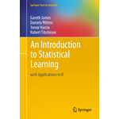
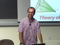

Computing for Data Sciences
Welcome to the 2017 edition of the course
Computing for Data Sciences (CDS), aka BAISI-4, is one of the five courses offered at ISI Kolkata during the First Semester of the PGDBA program. The Fall 2017 edition of the course -- CDS 2017 -- is taught by Sourav Sen Gupta from R C Bose Centre, Indian Statistical Institute, Kolkata.
Information
Course : BAISI-4 (aka CDS)
Wednesday & Friday @ 11:00 - 13:00
Assignments = 30% (mixed form)
Mid-Sem Eval. = 20% (hackathon)
End-Sem Eval. = 50% (incl. project)
Lectures
We have time for about 26 two-hour lectures during Fall 2017 -- that's 52 hours in total! We will try to distribute this time carefully between Classroom Lectures (about 36-40 hours), Invited Talks (about 8 hours), and Interactive Sessions (about 4-8 hours) -- as required for the course. The schedule of the Classroom Lectures, and all relevant references and resources are posted as follows.
To prevent unwanted execution, the Python files (sometimes other code files too) linked below will be downloaded as
| Lec | Date | Topic | Reference | Resources |
|---|---|---|---|---|
| 01 | 26-07-2017 | Introduction to Computing | Demaine and Devadas : Lec. 1 | Binary Search |
| 02 | 28-07-2017 | Introduction to Complexity | Cormen et al. (Algo) : Ch. 1, 2, 3 | Asymptotic Notation |
| 28-07-2017 | Introduction to Python | Python Class by Google | pythonIntro.py | |
| 03 | 02-08-2017 | Introduction to Convergence | Demaine and Devadas : Lec. 11, 12 | Newton's Method |
| 04 | 04-08-2017 | Finding Roots and Minima | Solomon (Numerical) : Ch. 8.1 | Video 1 | Video 2 |
| 05 | 09-08-2017 | Linear Regression and Optimization | Andrew Ng : Lec. 2 | Gradient Descent |
| 06 | 10-08-2017 | Linear Regression and Estimation | James et al. (ISLR) : Ch. 3.1
Hastie and Tibshirani : Ch. 3 Lectures |
IntroLinReg.R
Advertising.csv |
| 07 | 16-08-2017 | Linear Regression Fundamentals | James et al. (ISLR) : Ch. 3.1, 3.2
Hastie and Tibshirani : Ch. 3 Lectures |
LinRegBasics.R
Advertising.csv |
| 08 | 17-08-2017 | Linear Regression and Prediction | James et al. (ISLR) : Ch. 3.1, 3.2
Hastie and Tibshirani : Ch. 3 Lectures |
LinRegPred.R
The Intervals |
| 09 | 23-08-2017 | Linear Regression and Projection |
Gilbert Strang : Lec. 10
Andrew Ng : Lec. 2 |
The Sub-Spaces
Normal Equation |
| 10 | 25-08-2017 | Bias-Variance and Cross-Validation | James et al. (ISLR) : Ch. 5.1
Hastie and Tibshirani : Ch. 5 Lectures |
CrossVal.R
Bias-Variance |
| 11 | 30-08-2017 | Linear Regression Laboratory | James et al. (ISLR) : Ch. 3.6
Hastie and Tibshirani : Ch. 3 Lectures |
LinRegLab.R
Python Starter |
| 12 | 01-09-2017 | Model Selection and Regularization | James et al. (ISLR) : Ch. 6.1, 6.2
Hastie and Tibshirani : Ch. 6 Lectures |
ModelSelect.R
Regression by UW |
| 13 | 06-09-2017 | Classification and Logistic Regression | James et al. (ISLR) : Ch. 4.1 to 4.3
Hastie and Tibshirani : Ch. 4 Lectures |
LogRegBasics.R
Maximum Likelihood |
| 19-09-2017 | Cricket Analytics : Dr. Srinivas Bhogle | Slides on T20 | Article on DL | Thesis on DL in T20 | |
| 20-09-2017 | Mid-Sem Examination | Open-Resources Data Analytics Hackathon | Note : Group Test | |
| 14 | 22-09-2017 | Logistic Regression and Prediction | James et al. (ISLR) : Ch. 4.4, 4.5
Hastie and Tibshirani : Ch. 4 Lectures |
LogRegBasics.R
Intro to ROC Analysis |
| 15 | 11-10-2017 | Partition, Information, and Tree Models | James et al. (ISLR) : Ch. 8.1
Hastie and Tibshirani : Ch. 8 Lectures Classification by UW : Week 3 Lectures |
DecisionTree.R
Advertising.csv CarEvaluation.csv |
| 16 | 13-10-2017 | Bootstrap, Bagging and Random Forest | James et al. (ISLR) : Ch. 8.2
Hastie and Tibshirani : Ch. 8 Lectures Classification by UW : Week 3 Lectures |
RandomForest.R
Advertising.csv CarEvaluation.csv |
| 17 | 17-10-2017 | Tuning and Gradient Boosted Models | James et al. (ISLR) : Ch. 8.2
Hastie and Tibshirani : Ch. 8 Lectures Classification by UW : Week 3 Lectures |
TuningBoosting.R
Boosted Trees Boosting Visualized |
| 18 | 18-10-2017 | Hard & Soft Margins for Classification | James et al. (ISLR) : Ch. 9.1, 9.2
Hastie and Tibshirani : Ch. 9 Lectures |
SupportVectors.R
Margin Formulation |
| 19 | 20-10-2017 | Support Vector Machines and Kernels | James et al. (ISLR) : Ch. 9.3, 9.4
Hastie and Tibshirani : Ch. 9 Lectures |
SupVecMachine.R
SVMachineLab.R |
| 20 | 25-10-2017 | Unsupervised Learning and Clustering | James et al. (ISLR) : Ch. 10.3
Hastie and Tibshirani : Ch. 10 Lectures |
Clustering.R
k-Means Visualized |
| 21 | 26-10-2017 | Distances and Hierarchical Clustering | James et al. (ISLR) : Ch. 10.3
Hastie and Tibshirani : Ch. 10 Lectures |
Clustering.R
Hierarchical Clustering |
| 22 | 27-10-2017 | Unsupervised Learning and Embedding | James et al. (ISLR) : Ch. 10.2
Hastie and Tibshirani : Ch. 10 Lectures Tutorial on PCA by Jonathon Shlens |
DimReduction.R
joker.jpg t-SNE Resources |
| 31-10-2017 | Survival Analysis : Dr. Biswabrata Pradhan | Slides on Survival Analysis | Springate (2014) | |
| 01-11-2017 | Recommendation Systems : Arkosnato Neogy | Koren Paper | Hinton Paper | Pointers to Resources | |
| 01-11-2017 | Time Series Analysis : Dr. Diganta Mukherjee | Slides on Time Series Analysis | Shumway and Stoffer | |
| 03-11-2017 | Survival Analysis : Dr. Biswabrata Pradhan | Slides on Survival Analysis | Springate (2014) | |
| 23 | 07-11-2017 | Matrix Factorization and Recommendation | Leskovec et al. (MMDS) : Ch. 9.1, 9.4, 9.5
Recommender Systems (Coursera) |
Recommender.R
jesterRatings.csv Paper by Koren et al. |
| 08-11-2017 | Expectation-Maximization : Dr. Anil Ghosh | Theory and Use of the EM Algorithm | Mixture Models | |
| 08-11-2017 | Time Series Analysis : Dr. Diganta Mukherjee | Slides on Time Series Analysis | Shumway and Stoffer | |
| 13-11-2017 | Probability Distributions : Dr. Arnab Chakraborty | Slides on Probability Distributions | Seeing Theory | |
| 24 | 13-11-2017 | EM-Clust, PageRank, Scraping, and Monte-Carlo | EM Algorithm for Gaussian Mixtures
Leskovec et al. (MMDS) : Ch. 5.1, 5.2 Tutorial on Data Scraping with rvest Tricks with Monte-Carlo Simulations |
mclust Tutorial
PageRank.R DataScraping.R mcSimulation.R |
| 29-11-2017 | End-Sem Examination | Closed-Book Standard Written Test | Note : Individual Test | |
| 01-12-2017 | Project Presentations | Schedule decided by Project Groups | Note : Group Talks | |
| 02-12-2017 | Project Presentations | Schedule decided by Project Groups | Note : Group Talks |
{kind=link}
Books and Compilations
Textbooks and Recommended References
There is no single textbook for CDS. The following books and compiled lecture notes treat, quite comprehensively, the topics that CDS broadly tries to cover -- highly recommended.
-

Software for Data Analysis: Programming with R
John Chambers Springer (Second Printing), 2009 -

Introduction to Algorithms
Thomas H. Cormen, Charles E. Leiserson, Ronald L. Rivest and Clifford Stein The MIT Press (Third Edition), 2009 -
Numerical Algorithms
Justin Solomon Available online at this link -

An Introduction to Statistical Learning
Gareth James, Daniela Witten, Trevor Hastie and Robert Tibshirani Available online at this link -
The Elements of Statistical Learning
Trevor Hastie, Robert Tibshirani and Jerome Friedman Available online at this link -
Mining of Massive Datasets
Jure Leskovec, Anand Rajaraman and Jeff Ullman Available online at this link
The books listed above are the basic references for CDS. During the course, we will refer to these books from time-to-time, as and when required, but we may not see through any of these books cover-to-cover.
Lecture Videos and Notes
Adds a completely new dimension to Reading
There are several lecture notes and video lectures that perfectly complement the material that CDS plans to cover. The students are encouraged to follow these amazing resources.
-

Algorithms | Demaine and Devadas
Lecture videos available online at this link -

Numerical Algorithms | Justin Solomon
Lecture videos available online at this link -
Linear Algebra | Gilbert Strang
Lecture videos available online at this link -

Statistical Learning | Hastie and Tibshirani
Lecture videos available online at this link -

Machine Learning | Univ. of Washington
Coursera course available online at this link -

Machine Learning | Andrew Ng
Lecture videos available online at this link -
Machine Learning | Nando de Freitas
Lecture videos available online at this link
The courses and video lectures listed above are closely related to the topics covered in CDS. During the course, we will refer to these lectures from time-to-time, as and when required, but we may not need to go through any of these courses end-to-end. In addition to the above, please feel free to explore Coursera.
R Programming Resources
The main tool for computing used during CDS is R. The following resources may help you in getting yourself acquainted with the basics of R. Get comfortable, and get your hands dirty!
- Introduction to R by DataCamp | Quite nice introduction, and even better, free!
- R by Example | By Ajay Shah | Quick illustrative examples of features.
-
Advanced topics in R and Understanding Memory in R | By Hadley Wickham
Really good articles on the advanced technical nitty-gritties of R. -
R and Data Mining | By Yanchang Zhao
Wonderful book with a number of cool applications of Data Mining. - Introducing
Monte Carlo Methods with R | By C.P. Robert and G. Casella
Lovely introduction to Monte Carlo simulations with hands-on applications in R. -
Monte Carlo Simulations in R | By Will Kurt
Nice blog-post introducing Monte Carlo simulations using R.
Python Programming Resources
The most versatile language for Scientific Computation is Python. The following resources may help you in getting yourself acquainted with the basics of Python. Get used to it!
- Python Class by Google | Decent online class to learn the basics of Python.
- Think Python | By Allen B. Downey | Teaches CS through Python.
- Introduction to Python for Data Science by DataCamp | Really nice free course.
-
scikit-learn -- Machine Learning in Python
Undoubtedly the best Python package for Data Analytics and Machine Learning.
Visual Map for ML Algorithms | Video Tutorials from Data School -
Building Machine Learning Systems with Python
Wonderful book with a number of cool applications of Machine Learning.
By Willi Richert and Luis Pedro Coelho | Source Codes from GitHub - A Programmer's Guide to Data Mining | By Ron Zacharski | Really nice!
Assignments
Worth 30% of the total grade
Assignments will be posted on a regular basis. Each group (sometimes individual) has to submit 5 assignments during the course of the semester, out of which the 0-th one will not be graded. All assignments are worth equal, that is, 7.5% of the total grade, each.
| Assignment | Posted | Deadline | Remarks |
|---|---|---|---|
| Assignment 0 | 28-07-2017 | 09-08-2017 | Not graded |
| Assignment 1 | 07-08-2017 | 15-08-2017 | Individual |
|
Assignment 2
wineTrain.csv |
31-08-2017 | 18-09-2017 | Group |
|
Assignment 3
smsdata.txt |
20-10-2017 | 30-10-2017 | Group |
|
Assignment 4
cuisine.json |
05-11-2017 | 15-11-2017 | Group |
Projects
Worth 30% of the total grade
About 30% weightage (out of 50%) will be reserved in the End-of-Semeseter evaluation for the Term Project. Each group is supposed to deliver a Project Presentation (30 mins per group), including a Q&A session (5 mins per group), and a Project Report (theory/code).
Each group is at the liberty of choosing the topic for their Term Project. However, the term project chosen by each group must be approved by Sourav before they may be executed. The last date for finalizing the topics for the term projects is Thursday, 7 September 2017.
One may take part in a competition on Kaggle, DrivenData, CrowdAnalytix, InnoCentive, etc, or explore the open datasets made available by UNICEF, WHO, AWS, Google, EU, and US Govt.
Term Projects may also be inspired by earlier Stanford CS229 projects available at 2016, 2016 Spring, 2015, 2014, 2013, 2012, 2011, 2010, 2009, 2008, 2007, 2006, 2005, 2004, or by the diverse list of Business Case Studies posted by the Sloan School, MIT.
Potential topics for Term Projects may also include substantial extension (upon mutual discussion with Sourav) of previous years' projects available at CDS 2016, CDS 2015.